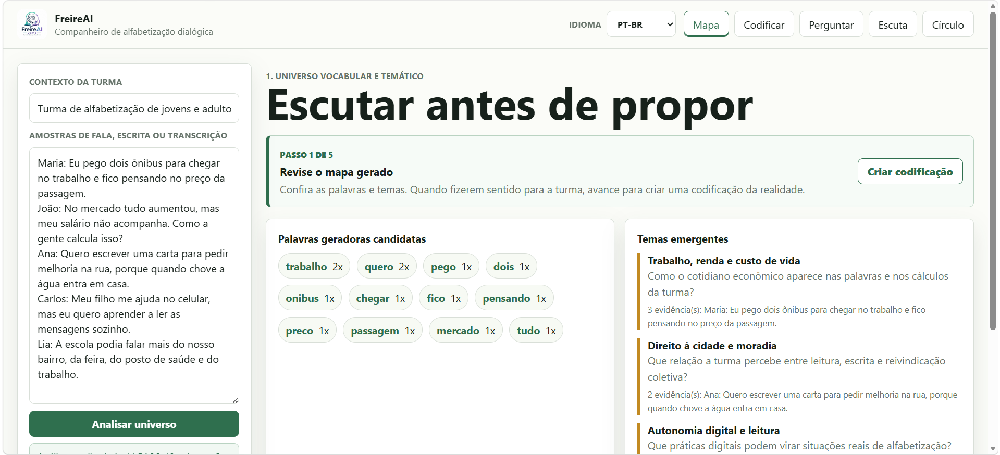

Listen before proposing
Map generative words, evidence, and tensions from learner speech or writing.
Gemma 4 Good pilot
A trilingual AI companion that helps educators listen first, create situated literacy prompts, and facilitate digital culture circles.
Method and project
FreireAI uses Gemma as a mediator, not as an oracle. It turns learner language into themes, questions, and codifications that educators can review and adapt.
Map generative words, evidence, and tensions from learner speech or writing.
Draft stories, dialogue scenes, or image prompts that open conversation instead of closing it.
Support pedagogy-of-the-question responses that preserve the educator's role.
Live prototype
The published app includes local fallback mode, optional Gemma API mode, multilingual UI, and Markdown export for educator records.

Videos
Choose the language that is most comfortable for you.
Invited validation
Please use fictional or minimized learner examples. Do not include sensitive learner data in feedback forms.
Ready to explore?